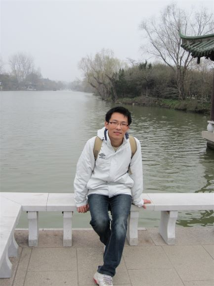

About this website
Thank you for browsing my personal homepage.
I built this website for my doctoral program’s application, because a website may be convenient for professors to browse.
The reason I apply for PhD. program
I always have a dream to become a teacher in college. I wish to take part in research and education works because I am interested to explore unknown fields in my major and I am willing to help others.
In the future, I hope to help students to improve their ability of learning and research, especially those slow students. I have many similar experiences with them and could help them more.
On the other hand, my character leans more toward a stable career.
In school days, I once got some chances to get enrolled in doctoral courses, but unfortunately I missed them. After commuting in companies for many years, the dream is not fade off. Eventually I made up my mind to apply for an overseas PhD.
program.
After I graduated with PhD., I plan to go back to China to become a teacher in a professional college, a regular college, or an educational organization.
About me
Nice to meet you! I'm ZHANG Liang, written in Chinese as 张良. I come from Jinan, the capital of Shandong Province in China's east. I grew up in a small town near here.
I passed the time of my bachelor's school in a common college in Shandong. Then I took the national graduate school entrance examination. In graduate school, my laboratory mainly researches the reliability of NC machines and robots. My research
was about structural analysis and computational algorithms for machines, by CAE and many code works.
After graduation, I worked for several years in Shanghai as a software engineer. Now I am working in a software company in Jinan.
In leisure time, I like playing soccer, watching Japanese manga, and listen to some music groups.